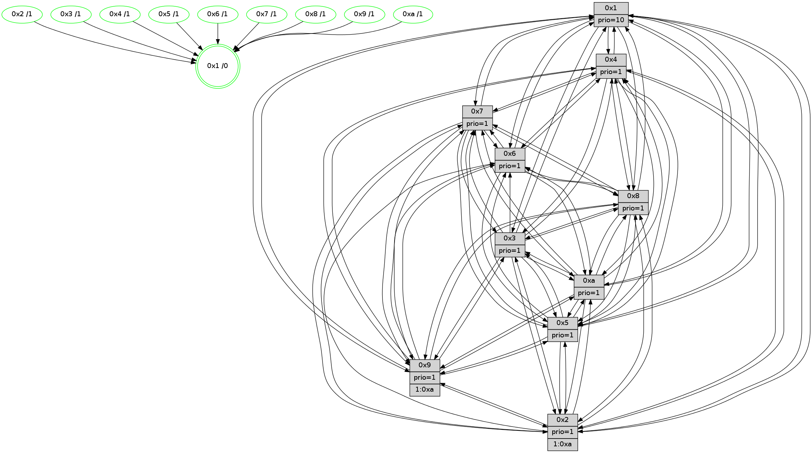

>> << IDX [start] -100 -25 -5 +0 +5 +25 +100 [1400.14918804]
 Previous packets
----------------------------------------------------------------------
1395.420404 beacon01(faad) #0 coord=01,02,03,04,05,06,07,0a,09,08 cycle=688.0ms assoc
-- color-indic=1 64 5a 6a
1395.430387 beacon02(faad) #0 coord=01,02,03,04,05,06,07,0a,09,08 cycle=688.0ms assoc 64 c9 5b
1395.440385 beacon03(faad) #0 coord=01,02,03,04,05,06,07,0a,09,08 cycle=688.0ms assoc 64 b3 16
1395.450386 beacon04(faad) #0 coord=01,02,03,04,05,06,07,0a,09,08 cycle=688.0ms assoc 64 c4 fc
1395.460386 beacon05(faad) #0 coord=01,02,03,04,05,06,07,0a,09,08 cycle=688.0ms assoc 64 be b1
1395.470386 beacon06(faad) #0 coord=01,02,03,04,05,06,07,0a,09,08 cycle=688.0ms assoc 64 30 66
1395.480387 beacon07(faad) #0 coord=01,02,03,04,05,06,07,0a,09,08 cycle=688.0ms assoc 64 4a 2b
1395.490392 beacon0a(faad) #0 coord=01,02,03,04,05,06,07,0a,09,08 cycle=688.0ms assoc 64 3b 20
1395.510391 beacon08(faad) #0 coord=01,02,03,04,05,06,07,0a,09,08 cycle=688.0ms assoc 64 cf ba
1395.522895 [Hello(5): seq=890 sym=7,6,4,3,1,9,8,10,2 sysInfo=hasWarning stat=7:14,7,14,0/6:0,6,11,4/4:3,14,5,15/3:6,15,7,2/1:9,3,9,0/9:2,13,15,11/8:0,5,2,4/10:1,11,2,9/2:5,15,8,7]
1395.525942 [Color(10) seq=479 @0:0 prio=1]
1395.528417 [Hello(3): seq=890 sym=1,7,6,2,4,8,9,10,5 sysInfo=hasWarning stat=1:11,8,8,0/7:11,13,11,14/6:13,4,4,1/2:1,12,0,2/4:3,7,13,13/8:2,13,5,5/9:0,7,10,1/10:4,0,15,5/5:14,3,13,1]
1395.531141 [Color(2) seq=466 @0:0 prio=1 >1.@a]
1395.532617 [Hello(1): seq=799 sym=4,2,9,5,10,3,8,6,7 sysInfo=coloring-mode-on,ColoringModeRequestCalled stat=4:2,1,10,3/2:3,6,1,5/9:2,12,4,2/5:6,13,7,9/10:3,13,5,8/3:6,2,4,11/8:1,6,4,3/6:9,14,3,1/7:1,11,11,1]
1395.535843 [Color(3) seq=519 @0:0 prio=1]
1395.542988 [Hello(6): seq=890 sym=5,4,7,9,8,10,1 sysInfo=hasWarning stat=5:5,8,6,4/4:15,0,10,8/7:3,0,5,15/9:7,8,14,11/8:12,6,14,6/10:14,11,6,13/1:1,0,5,1]
----------------------------------------------------------------------
1396.208534 beacon01(faad) #0 coord=01,02,03,04,05,06,07,0a,09,08 cycle=688.0ms assoc
-- color-indic=1 64 e6 6f
1396.218517 beacon02(faad) #0 coord=01,02,03,04,05,06,07,0a,09,08 cycle=688.0ms assoc 64 75 5e
1396.228517 beacon03(faad) #0 coord=01,02,03,04,05,06,07,0a,09,08 cycle=688.0ms assoc 64 0f 13
1396.238517 beacon04(faad) #0 coord=01,02,03,04,05,06,07,0a,09,08 cycle=688.0ms assoc 64 78 f9
1396.248517 beacon05(faad) #0 coord=01,02,03,04,05,06,07,0a,09,08 cycle=688.0ms assoc 64 02 b4
1396.258516 beacon06(faad) #0 coord=01,02,03,04,05,06,07,0a,09,08 cycle=688.0ms assoc 64 8c 63
1396.268518 beacon07(faad) #0 coord=01,02,03,04,05,06,07,0a,09,08 cycle=688.0ms assoc 64 f6 2e
1396.278523 beacon0a(faad) #0 coord=01,02,03,04,05,06,07,0a,09,08 cycle=688.0ms assoc 64 87 25
1396.298523 beacon08(faad) #0 coord=01,02,03,04,05,06,07,0a,09,08 cycle=688.0ms assoc 64 73 bf
1396.309737 [Hello(10): seq=823 sym=6,2,3,8,7,5,9,4,1 sysInfo=hasWarning stat=6:11,10,2,4/2:7,0,4,0/3:15,1,8,15/8:10,13,2,3/7:0,4,15,9/5:1,3,14,1/9:1,6,3,1/4:6,14,12,2/1:15,15,1,1]
1396.313582 [STC(1) #0.239 tree-change,inconsistent-stability,stable,to-color d=0]
1396.319168 [Color(1) seq=570 @0:0 prio=10 >1.@a]
1396.320937 [Hello(7): seq=890 sym=2,3,5,6,4,8,9,10,1 sysInfo=hasWarning stat=2:6,5,5,4/3:15,13,8,3/5:13,3,12,3/6:11,8,7,12/4:15,12,8,1/8:1,2,1,0/9:7,0,9,2/10:15,11,0,7/1:5,12,2,0]
1396.326001 [Color(7) seq=418 @0:0 prio=1 >1.@a]
1396.331624 [Color(8) seq=489 @0:0 prio=1 >1.@a]
1396.334313 [Color(5) seq=437 @0:0 prio=1 >1.@9,1.@a]
1396.337736 [Hello(4): seq=890 sym=5,8,6,2,3,9,7,10,1 sysInfo= stat=5:10,0,9,2/8:0,1,0,0/6:3,6,14,15/2:11,6,6,1/3:2,3,0,15/9:10,11,14,2/7:9,15,1,0/10:3,4,0,14/1:9,2,5,1]
1396.342146 [Color(4) seq=429 @0:0 prio=1 >1.@a]
----------------------------------------------------------------------
1396.996665 beacon01(faad) #0 coord=01,02,03,04,05,06,07,0a,09,08 cycle=688.0ms assoc
-- color-indic=1 64 22 61
1397.006647 beacon02(faad) #0 coord=01,02,03,04,05,06,07,0a,09,08 cycle=688.0ms assoc 64 b1 50
1397.016648 beacon03(faad) #0 coord=01,02,03,04,05,06,07,0a,09,08 cycle=688.0ms assoc 64 cb 1d
1397.026646 beacon04(faad) #0 coord=01,02,03,04,05,06,07,0a,09,08 cycle=688.0ms assoc 64 bc f7
1397.036648 beacon05(faad) #0 coord=01,02,03,04,05,06,07,0a,09,08 cycle=688.0ms assoc 64 c6 ba
1397.046647 beacon06(faad) #0 coord=01,02,03,04,05,06,07,0a,09,08 cycle=688.0ms assoc 64 48 6d
1397.056647 beacon07(faad) #0 coord=01,02,03,04,05,06,07,0a,09,08 cycle=688.0ms assoc 64 32 20
1397.066653 beacon0a(faad) #0 coord=01,02,03,04,05,06,07,0a,09,08 cycle=688.0ms assoc 64 43 2b
1397.086653 beacon08(faad) #0 coord=01,02,03,04,05,06,07,0a,09,08 cycle=688.0ms assoc 64 b7 b1
1397.097849 [Hello(5): seq=891 sym=7,6,4,3,1,9,8,10,2 sysInfo=hasWarning stat=7:14,7,14,0/6:1,6,11,4/4:4,15,5,15/3:6,0,7,2/1:10,3,9,0/9:2,14,15,11/8:0,5,2,4/10:2,11,2,9/2:6,0,8,7]
1397.100638 [STC(7)->1 #0.239 tree-change,inconsistent-stability,stable,to-color d=1]
1397.103055 [Color(9) seq=450 @0:0 prio=1 >1.@a]
1397.104575 [Hello(3): seq=891 sym=1,7,6,2,4,8,9,10,5 sysInfo=hasWarning stat=1:11,9,9,0/7:12,14,11,14/6:14,5,4,1/2:1,12,0,2/4:4,8,13,13/8:3,14,5,5/9:0,7,10,1/10:5,0,15,5/5:15,4,13,1]
1397.107382 [STC(3)->1 #0.239 tree-change,inconsistent-stability,stable,to-color d=1]
1397.108599 [STC(4)->1 #0.239 tree-change,inconsistent-stability,stable,to-color d=1]
1397.111338 [Color(3) seq=520 @0:0 prio=1]
1397.113205 [Hello(2): seq=887 sym=4,5,7,6,3,9,8,10,1 sysInfo=hasWarning stat=4:8,2,7,13/5:7,13,0,3/7:7,15,9,1/6:12,1,6,1/3:2,3,0,0/9:13,9,7,10/8:10,14,4,12/10:7,1,5,11/1:8,0,1,0]
1397.115941 [STC(10)->1 #0.239 tree-change,inconsistent-stability,stable,to-color d=1]
1397.117655 [STC(6)->1 #0.239 tree-change,inconsistent-stability,stable,to-color d=1]
1397.121191 [Color(6) seq=523 @0:0 prio=1 >>1.@a]
1397.122841 [Color(10) seq=480 @0:0 prio=1]
1397.124339 [Hello(1): seq=800 sym=4,2,9,5,10,3,8,6,7 sysInfo=coloring-mode-on,ColoringModeRequestCalled stat=4:3,2,10,3/2:3,6,1,5/9:2,12,4,2/5:6,14,7,9/10:4,13,5,8/3:6,3,4,11/8:1,7,4,3/6:10,15,3,1/7:2,12,11,1]
1397.129094 [STC(2)->1 #0.239 tree-change,inconsistent-stability,stable,to-color d=1]
1397.132007 [Color(2) seq=467 @0:0 prio=1 >1.@a]
----------------------------------------------------------------------
1397.784796 beacon01(faad) #0 coord=01,02,03,04,05,06,07,0a,09,08 cycle=688.0ms assoc
-- color-indic=1 64 9e 64
1397.794779 beacon02(faad) #0 coord=01,02,03,04,05,06,07,0a,09,08 cycle=688.0ms assoc 64 0d 55
1397.804778 beacon03(faad) #0 coord=01,02,03,04,05,06,07,0a,09,08 cycle=688.0ms assoc 64 77 18
1397.814779 beacon04(faad) #0 coord=01,02,03,04,05,06,07,0a,09,08 cycle=688.0ms assoc 64 00 f2
1397.824778 beacon05(faad) #0 coord=01,02,03,04,05,06,07,0a,09,08 cycle=688.0ms assoc 64 7a bf
1397.834779 beacon06(faad) #0 coord=01,02,03,04,05,06,07,0a,09,08 cycle=688.0ms assoc 64 f4 68
1397.844780 beacon07(faad) #0 coord=01,02,03,04,05,06,07,0a,09,08 cycle=688.0ms assoc 64 8e 25
1397.854786 beacon0a(faad) #0 coord=01,02,03,04,05,06,07,0a,09,08 cycle=688.0ms assoc 64 ff 2e
1397.874784 beacon08(faad) #0 coord=01,02,03,04,05,06,07,0a,09,08 cycle=688.0ms assoc 64 0b b4
1397.886958 [Hello(10): seq=824 sym=6,2,3,8,7,5,9,4,1 sysInfo=hasWarning stat=6:11,10,2,4/2:7,1,5,0/3:15,1,8,15/8:11,14,2,3/7:1,5,0,9/5:2,4,14,1/9:1,6,3,1/4:7,15,12,2/1:0,0,2,1]
1397.890570 [Hello(4): seq=891 sym=5,8,6,2,3,9,7,10,1 sysInfo= stat=5:10,0,9,2/8:0,1,0,0/6:3,7,15,15/2:12,7,7,1/3:2,4,0,15/9:10,11,14,2/7:9,15,1,0/10:4,5,1,14/1:10,2,6,1]
1397.894139 [Color(5) seq=438 @0:0 prio=1 >1.@a]
1397.895606 [Hello(8): seq=835 sym=5,2,3,7,9,6,4,10,1 sysInfo=hasWarning stat=5:11,5,8,1/2:2,0,14,12/3:12,2,3,4/7:12,14,3,1/9:1,9,9,5/6:1,0,0,0/4:6,13,4,1/10:11,4,15,5/1:15,9,7,0]
1397.898963 [Color(4) seq=430 @0:0 prio=1 >1.@a]
1397.901449 [Hello(9): seq=835 sym=2,5,3,4,7,6,8,10,1 sysInfo=hasWarning stat=2:9,14,0,11/5:8,1,2,8/3:11,0,9,4/4:4,14,6,2/7:3,5,9,4/6:10,5,15,14/8:1,2,6,6/10:7,7,2,0/1:2,2,6,1]
1397.905890 [Hello(7): seq=891 sym=2,3,5,6,4,8,9,10,1 sysInfo=hasWarning stat=2:7,6,6,4/3:15,14,9,3/5:13,4,12,3/6:12,9,8,12/4:0,13,9,1/8:1,3,1,0/9:7,1,9,2/10:0,12,1,7/1:6,12,3,0]
1397.908607 [Color(8) seq=490 @0:0 prio=1 >1.@a]
1397.909970 [Color(7) seq=419 @0:0 prio=1 >1.@a]
----------------------------------------------------------------------
1398.572927 beacon01(faad) #0 coord=01,02,03,04,05,06,07,0a,09,08 cycle=688.0ms assoc
-- color-indic=1 64 0a bd
1398.582909 beacon02(faad) #0 coord=01,02,03,04,05,06,07,0a,09,08 cycle=688.0ms assoc 64 99 8c
1398.592910 beacon03(faad) #0 coord=01,02,03,04,05,06,07,0a,09,08 cycle=688.0ms assoc 64 e3 c1
1398.602909 beacon04(faad) #0 coord=01,02,03,04,05,06,07,0a,09,08 cycle=688.0ms assoc 64 94 2b
1398.612910 beacon05(faad) #0 coord=01,02,03,04,05,06,07,0a,09,08 cycle=688.0ms assoc 64 ee 66
1398.622911 beacon06(faad) #0 coord=01,02,03,04,05,06,07,0a,09,08 cycle=688.0ms assoc 64 60 b1
1398.632909 beacon07(faad) #0 coord=01,02,03,04,05,06,07,0a,09,08 cycle=688.0ms assoc 64 1a fc
1398.642916 beacon0a(faad) #0 coord=01,02,03,04,05,06,07,0a,09,08 cycle=688.0ms assoc 64 6b f7
1398.662916 beacon08(faad) #0 coord=01,02,03,04,05,06,07,0a,09,08 cycle=688.0ms assoc 64 9f 6d
1398.674172 [Hello(1): seq=801 sym=4,2,9,5,10,3,8,6,7 sysInfo=coloring-mode-on,ColoringModeRequestCalled stat=4:3,3,10,3/2:3,7,2,5/9:3,12,4,2/5:6,15,7,9/10:5,13,5,8/3:6,3,4,11/8:2,8,4,3/6:10,15,3,1/7:3,13,11,1]
1398.677474 [Hello(5): seq=892 sym=7,6,4,3,1,9,8,10,2 sysInfo=hasWarning stat=7:15,8,14,0/6:1,7,12,4/4:4,0,6,15/3:6,1,8,2/1:11,3,9,0/9:3,15,15,11/8:1,6,3,4/10:3,12,3,9/2:7,1,9,7]
1398.680460 [Color(10) seq=481 @0:0 prio=1]
1398.681798 [Hello(6): seq=892 sym=5,4,7,9,8,10,1 sysInfo=hasWarning stat=5:7,10,6,4/4:0,2,10,8/7:5,2,6,15/9:8,8,14,11/8:14,8,14,6/10:0,12,6,13/1:2,2,6,1]
1398.684488 [Hello(2): seq=888 sym=4,5,7,6,3,9,8,10,1 sysInfo=hasWarning stat=4:9,3,7,13/5:8,14,0,3/7:8,0,10,1/6:12,1,6,1/3:2,3,0,0/9:14,9,7,10/8:11,15,4,12/10:8,1,5,11/1:8,0,1,0]
1398.687360 [Color(6) seq=524 @0:0 prio=1]
1398.688720 [Color(2) seq=468 @0:0 prio=1 >1.@a]
1398.690828 [Color(9) seq=451 @0:0 prio=1 >1.@a]
1398.700759 [Hello(3): seq=892 sym=1,7,6,2,4,8,9,10,5 sysInfo=hasWarning stat=1:12,10,9,0/7:13,15,11,14/6:14,6,5,1/2:2,13,1,2/4:4,9,14,13/8:4,15,5,5/9:1,7,10,1/10:6,1,0,5/5:0,5,13,1]
1398.703886 [Color(3) seq=521 @0:0 prio=1]
----------------------------------------------------------------------
1399.361057 beacon01(faad) #0 coord=01,02,03,04,05,06,07,0a,09,08 cycle=688.0ms assoc
-- color-indic=1 64 b6 b8
1399.371040 beacon02(faad) #0 coord=01,02,03,04,05,06,07,0a,09,08 cycle=688.0ms assoc 64 25 89
1399.381039 beacon03(faad) #0 coord=01,02,03,04,05,06,07,0a,09,08 cycle=688.0ms assoc 64 5f c4
1399.391040 beacon04(faad) #0 coord=01,02,03,04,05,06,07,0a,09,08 cycle=688.0ms assoc 64 28 2e
1399.401040 beacon05(faad) #0 coord=01,02,03,04,05,06,07,0a,09,08 cycle=688.0ms assoc 64 52 63
1399.411040 beacon06(faad) #0 coord=01,02,03,04,05,06,07,0a,09,08 cycle=688.0ms assoc 64 dc b4
1399.421041 beacon07(faad) #0 coord=01,02,03,04,05,06,07,0a,09,08 cycle=688.0ms assoc 64 a6 f9
1399.431045 beacon0a(faad) #0 coord=01,02,03,04,05,06,07,0a,09,08 cycle=688.0ms assoc 64 d7 f2
1399.451045 beacon08(faad) #0 coord=01,02,03,04,05,06,07,0a,09,08 cycle=688.0ms assoc 64 23 68
1399.462586 [Hello(9): seq=836 sym=2,5,3,4,7,6,8,10,1 sysInfo=hasWarning stat=2:9,14,0,11/5:9,1,2,8/3:12,1,9,4/4:4,14,6,2/7:4,6,9,4/6:10,5,15,14/8:1,3,6,6/10:7,7,2,0/1:3,2,6,1]
1399.465930 [Hello(10): seq=825 sym=6,2,3,8,7,5,9,4,1 sysInfo=hasWarning stat=6:12,11,2,4/2:8,2,5,0/3:0,2,8,15/8:12,15,2,3/7:2,6,0,9/5:2,5,14,1/9:2,7,3,1/4:7,0,12,2/1:1,1,2,1]
1399.468839 [Color(1) seq=572 @0:0 prio=10]
1399.470244 [Hello(8): seq=836 sym=5,2,3,7,9,6,4,10,1 sysInfo=hasWarning stat=5:12,5,8,1/2:3,1,14,12/3:13,3,3,4/7:12,15,3,1/9:1,10,9,5/6:2,1,0,0/4:6,13,4,1/10:12,5,15,5/1:0,9,7,0]
1399.472845 [Color(5) seq=439 @0:0 prio=1]
1399.475316 [Hello(7): seq=892 sym=2,3,5,6,4,8,9,10,1 sysInfo=hasWarning stat=2:8,7,6,4/3:0,15,9,3/5:14,4,12,3/6:13,10,8,12/4:0,13,9,1/8:1,3,1,0/9:7,2,9,2/10:1,13,1,7/1:7,12,3,0]
1399.477984 [Color(8) seq=491 @0:0 prio=1]
1399.479883 [Color(7) seq=420 @0:0 prio=1]
1399.482170 [Hello(4): seq=892 sym=5,8,6,2,3,9,7,10,1 sysInfo= stat=5:11,0,9,2/8:0,2,0,0/6:4,8,15,15/2:13,8,7,1/3:3,5,0,15/9:11,12,14,2/7:10,0,1,0/10:5,6,1,14/1:11,2,6,1]
1399.486593 [Color(4) seq=431 @0:0 prio=1]